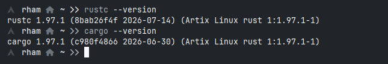

Haloo semuanya, udah lama sekali blog ini ga update hehe
sekarang saya akan melajutkan seri dari bahasa pemrograman Rust.
Jadi kita udah tau apa itu Rust, sekarang kita mau meng-install Rust itu sendiri.
Instalisasi Build Tools
Pertama yg kita persiapkan yaitu sehat jasmani dan rohani kemudian laptop buat install Rust itu sendiri.
Install Build tools terlebih dahulu
Debian Based
sudo apt update && sudo apt install build-essential curl -y
Fedora/CentOS
sudo dnf groupinstall "Development Tools" && sudo dnf install curl -y
Archlinux
sudo pacman -S base-devel curl
Install Rust
curl --proto '=https' --tlsv1.2 -sSf https://sh.rustup.rs | sh
Setelah selesai prosesnya selanjutnya Configure Your Environment PATH
source "$HOME/.cargo/env"
kalo sudah sekarang kita bisa cek apakah Rust sudah terinstall di komputer kita apa belum dg perintah :
rustc --version
cargo --version

Jika tampil seperti gambar di atas itu artinya kita telah sukses install Rust di komputer kita. Selanjutnya kita akan belajar dan mengulik Bahasa Pemrograman Rust, dan sampai jumpa di postingan selanjutnya.